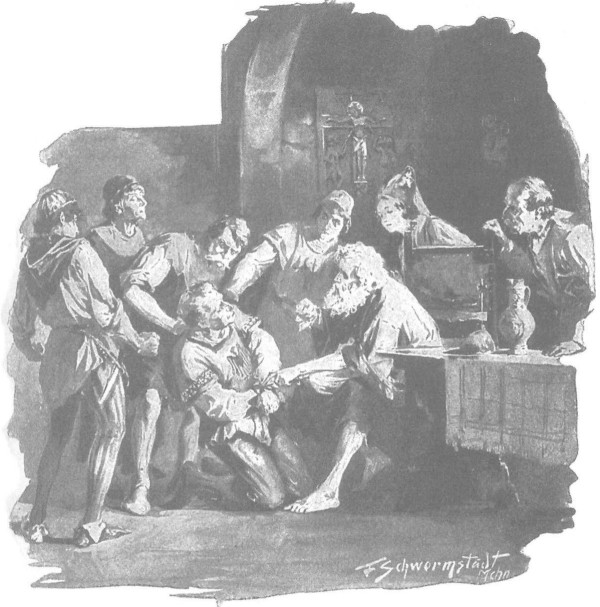

Zbyszko không thể đuổi kịp hộ vệ của mình, bởi vì Hlava giục ngựa phóng nhanh cả ngày lẫn đêm, chỉ dừng nghỉ khi lũ ngựa cần phải được nghỉ để khỏi bị chết gục; phải ăn thứ cỏ nhạt lẽo nơi đây, lũ ngựa không thể chịu nổi những cung đường trường như ở những vùng dồi dào yến mạch. Hlava không tiếc sức của bản thân, cũng không để ý đến tuổi già sức yếu của lão Zygfryd. Lão hiệp sĩ phải chịu giày vò ghê gớm, nhất là khi xương cốt của lão bị đau nhức sau trận đụng độ với ông Maćko gân guốc. Tuy nhiên, điều khiến lão khó chịu nhất là đàn muỗi tràn ngập trong những khu rừng ẩm ướt nơi đây, trong khi tay lão bị trói và hai chân bị buộc vào bụng ngựa, khiến lão không thể xua đuổi muỗi. Chàng hộ vệ không hành hạ, nhưng cũng chẳng thương xót gì lão, nên chỉ cho phép mở trói tay phải của lão khi dừng lại nghỉ ăn: “Ăn đi, đồ chó sói, cốt sao ta mang được ngươi còn sống về cho ông chủ trang Spychow!” - đó là những lời chàng giục lão. Thoạt đầu, lão Zygfryd định tuyệt thực cho chết, nhưng đến khi nghe bảo rằng họ sẽ dùng dao cạy răng lão và tống đồ ăn vào họng, thì lão đành chịu nhượng bộ để nhân phẩm và danh dự hiệp sĩ không bị tổn hại.
Chàng trai Séc nhất thiết phải về đến trang Spychow trước “các ông chủ” của anh, để tránh cho người phụ nữ mà anh yêu quý khỏi phải chịu xấu hổ. Là người mộc mạc nhưng cẩn trọng và không thiếu tinh thần thượng võ, vốn dòng dõi quý tộc, chàng hiểu rất rõ rằng sẽ là nhục nhã cho Jagienka nếu cô có mặt ở trang Spychow cùng lúc với Danusia. “Có thể thưa với đức giám mục xứ Plock,” chàng nghĩ bụng, “rằng cụ chủ Bogdaniec là người đỡ đầu, nên phải mang cô theo. Cha sẽ tuyên bố rằng cô được sự bảo trợ của đức giám mục, ngoài điền trang Zgorzelice cô còn được thừa kế di sản của cha trưởng tu viện. Và khi đó đến cả con trai thống đốc cũng không phải là quá cao với cô ấy.” Ý nghĩ ấy khiến cho những gian khó của chuyến đi trở nên nhẹ bớt, bởi lòng chàng vẫn chua xót khi nghĩ rằng cái tin tức tốt lành mà chàng mang về cho trang Spychow cũng chính là bản án cho cô thanh nữ bất hạnh.
Cô Sieciechówna vẫn thường hiện ra trong mắt chàng như một quả táo mỹ miều. Và lúc này đây, mỗi khi đường còn có thể đi lại được, chàng đều thúc mạnh cựa giục con ngựa, bởi vì chàng rất nóng lòng về được trang Spychow.
Họ thường lạc đường, hay đúng hơn là thường đi vào chỗ không có đường, cứ băng rừng, thẳng tiến như một con quăng bị ném về phía trước. Chàng Séc biết rằng chỉ cần đi theo hướng nam, hơi lệch về phía tây, cứ đến được Mazowsze thì mọi thứ sẽ ổn. Ban ngày, chàng định hướng theo vầng dương, còn khi hành trình kéo sang cả đêm, thì định hướng nhờ các vì sao. Rừng trải dài trước mặt họ dường như không có bến bờ, không giới hạn. Họ chìm trong bóng tối âm u của rừng cả đêm lẫn ngày. Nhiều lúc Hlava nghĩ rằng chàng hiệp sĩ trẻ tuổi sẽ không thể mang được cô trinh nữ còn sống sót trở về, băng qua chốn hoang vu kinh khủng này, nơi không ai trợ giúp, không chút lương thảo, nơi ban đêm phải lo bảo vệ đàn ngựa chống lại lũ chó sói và gấu dữ, còn ban ngày thì phải thường nhường đường cho những đàn bò tót và bò rừng, nơi những con lợn rừng đực đơn độc hồng hộc mài sắc những chiếc nanh cong nhọn vào đám rễ thông, nơi mà người ta suốt cả ngày sẽ chẳng có gì để ăn nếu không dùng cung nỏ để bắn gục hay dùng giáo dài để đâm hạ những con nai sừng tấm hoặc lợn rừng non.
“Sẽ ra sao đây,” Hlava nghĩ thầm, “nếu cứ đi mãi thế này với một cô gái đang sắp trút hơi thở cuối cùng!”
Nhiều lần họ phải đi vòng tránh những vùng đất trũng lầy lội rất rộng hoặc những khe sâu, mà dưới đáy ầm ào những dòng suối đang phình rộng bởi mưa xuân. Giữa chốn rừng hoang cũng không thiếu những hồ nước, nơi đó họ trông thấy từng đàn hươu nai lội trong làn nước phẳng lặng, vàng rực ánh hoàng hôn. Đôi khi, họ cũng nhìn thấy làn khói báo hiệu sự có mặt của dân cư. Nhiều lần, Hlava đến gần các lâm trại, nhưng từ trong trại liền túa ra những tốp người hoang dã, da thú khoác trên thân trần, cầm những cây chùy xích và cung nỏ, mắt gườm gườm dữ tợn dưới mái tóc bù xù đầy chấy rận, đến nỗi chàng phải tranh thủ giây phút họ đang bàng hoàng khi nhìn thấy một hiệp sĩ mặc giáp trụ đang đến gần, mà biến đi nhanh như chớp.
Tuy nhiên, đã hai lần những mũi tên bay rít qua tai chàng Séc và tiếng hò hét “ Wokili!” (Bọn Đức!) đuổi theo sau lưng, và chàng chỉ muốn mau chân chạy trốn hơn là giải thích mình là ai. Rốt cuộc, sau vài ngày đường nữa, chàng nghĩ rằng chắc đã vượt qua biên giới, nhưng chung quanh lại chẳng có ai để hỏi. Mãi đến khi gặp những người đang đi săn nói tiếng Ba Lan, chàng mới biết mình đã đứng trên vùng đất Mazowsze. Đường đi đã dễ hơn, mặc dù toàn bộ miền đông Mazowsze vẫn chỉ ầm ào triền miên một vùng rừng đại ngàn hoang vắng. Song cũng không đến nỗi không có bóng người, bởi ở những nơi có thôn ấp, cư dân ít xa lánh hơn, có lẽ vì không phải thường xuyên sống trong nỗi hận thù, và cũng có lẽ bởi vì chàng Séc đã nói với họ bằng một thứ ngôn ngữ mà họ có thể hiểu được. Điều tai hại là sự tò mò của những đám người vây quanh các kỵ sĩ trong đoàn, ném cho họ hàng tràng câu hỏi và khi biết rằng họ đem theo một tên tù binh là hiệp sĩ Thánh chiến, liền bảo:
- Giao hắn cho chúng tôi, thưa ngài, chúng tôi sẽ xử hắn!
Và họ đòi hỏi hăng máu đến nỗi chàng Séc thường phải nổi nóng hoặc phải giải thích cho họ rằng tù nhân này là của quận công. Nghe vậy, họ đành chịu nhượng bộ. Nhưng về sau, ở các vùng đất đông cư dân hơn, cách trả lời đó không dễ qua mặt giới quý tộc và hiệp sĩ. Ở nơi ấy, nỗi thù hận luôn sục sôi chống lại các hiệp sĩ Thánh chiến, bởi khắp nơi người ta vẫn còn nhớ như in sự phản bội và những xúc phạm mà chúng đã gây cho quận công khi chúng bắt cóc ngài tại Zlotoryja giữa thanh thiên bạch nhật và giam giữ ngài như một tù nhân. Quả tình họ không muốn xử Zygfryd, mà những vị quý tộc cứng rắn nói rằng: “Cởi trói cho lão, tôi sẽ đưa cho lão một thứ vũ khí, rồi sẽ thách lão đấu một trận sống mái.” Điều đó là gánh nặng đặt trên đầu chàng trai Séc, bởi chàng không được phép tước đi quyền trả thù đầu tiên của ông chủ trang Spychow bất hạnh.
Nhưng việc đi lại ở các vùng đông dân cư lại dễ hơn vì có những con đường tạm được và ở khắp mọi nơi, lũ ngựa được cho ăn yến mạch hay kiều mạch. Chàng trai Séc liền đi mải miết, không dừng lại ở đâu, và mười ngày trước lễ Mình Thánh Chúa Ki-tô [221] , chàng về tới Spychow.
Chàng về tới nơi vào buổi tối, khi ông Maćko vừa gửi tin từ thành Szczytno thông báo về chuyến đi của ông tới vùng Żmudź. Vừa thấy chàng qua khung cửa sổ, Jagienka chạy vội ra đón, và chàng liền quỳ sụp xuống chân cô, hồi lâu không thể nói được nên lời. Cô đỡ chàng lên và kéo nhanh đi lên gác, không muốn hỏi chàng khi có mặt mọi người.
- Có gì mới không? - Cô hỏi, run lên vì sốt ruột và không thể nén được hơi thở dồn. - Họ còn sống không? Khỏe cả chứ?
- Còn sống cả! Khỏe mạnh!
- Đã tìm được cô ấy à?
- Vâng. Họ đã cứu thoát cô ấy.
- Ngợi ca Chúa Giêsu Ki-tô!
Dù thốt ra những lời này, khuôn mặt cô chợt như đông cứng lại, bởi tất cả hy vọng của cô đều đã tan thành tro bụi.
Tuy nhiên, sức mạnh không rời bỏ cô và cô không mất tỉnh táo, chỉ một lát sau cô đã trấn tĩnh hoàn toàn và lại hỏi lần nữa:
- Bao giờ họ về đến đây?
- Chỉ một vài ngày nữa! Đường sá khó đi lắm, lại mang theo người ốm.
- Cô ấy bị bệnh sao?
- Nặng lắm. Đầu óc cô ấy bị lẫn do đau đớn.
- Lạy Chúa Giêsu lòng lành!
Một khoảng im lặng ngắn, đôi môi tái nhợt của Jagienka khẽ mấp máy như đang cầu nguyện.
- Cô ấy không tỉnh lại khi gặp Zbyszko sao? - Cô hỏi lại.
- Có thể cô ấy tỉnh lại, nhưng tôi không biết, vì tôi đã phải lên đường ngay để kịp về báo với cô chủ, trước khi họ về đến đây.
- Đức Chúa Trời sẽ trả công cho ngươi. Nói đi, mọi chuyện xảy ra thế nào?
Chàng Séc kể ngắn gọn họ đã cứu Danusia và bắt gã Arnold khổng lồ cùng Zygfryd thế nào. Chàng cũng nói là đã đưa gã Zygfryd về cùng, bởi chàng hiệp sĩ trẻ muốn tặng cho ông Jurand lão hiệp sĩ già như món quà để trả thù.
- Ta sẽ đến gặp bác Jurand bây giờ! - Jagienka nói ngay khi chàng vừa dứt lời, rồi bước ra.
Và cô rời khỏi, nhưng Hlava cũng chẳng phải ở lại một mình lâu; từ nhà ngang, Sieciechówna chạy về phía chàng, còn chàng, hoặc vì chưa tỉnh táo do mệt nhọc và những vất vả vô song, hoặc vì quá nhớ cô và bàng hoàng khi vừa nhìn thấy cô, chỉ biết ôm chặt vòng eo cô, ghì chặt vào ngực, rồi hôn tới tấp lên mắt, lên má, lên môi, như thể đã từng nói tất cả mọi điều cần phải nói với một cô thanh nữ trước khi thể hiện hành động như vậy.
Và cũng có thể chàng đã nói thầm với cô trong tâm tưởng vào những ngày đi đường, bởi chàng hôn và hôn cô mãi không ngừng nghỉ, ôm mạnh đến nỗi cô gần như tắc thở, còn cô không cưỡng lại, thoạt tiên vì quá thảng thốt, còn sau đó vì nỗi mê đắm tuyệt vời, đến nỗi cô sẽ ngã xoài ra đất nếu đôi cánh tay đang giữ cô không mạnh mẽ đến thế. May thay, mọi chuyện không kéo dài quá lâu, bởi vì trên cầu thang đã nghe tiếng bước chân và chỉ lát sau cha Kaleb bước vào.
Họ vội nhảy rời khỏi nhau, cha Kaleb bắt đầu hỏi dồn Hlava những câu mà chàng rất khó trả lời vì gần như không kịp thở. Linh mục nghĩ rằng đó là do chàng quá mệt. Nghe tin Danusia đã được giải thoát, còn tên đao phủ của nàng thì đã bị bắt đưa về đến Spychow, cha liền quỳ xuống để cảm tạ Thiên Chúa. Trong khoảng thời gian đó, dòng máu trong người Hlava đã kịp dịu đi một chút và khi linh mục đứng lên, chàng có thể dễ dàng thuật lại với cha chuyện họ đã tìm thấy và giải thoát Danusia ra sao.
- Đức Chúa Trời đã cứu tiểu thư, - nghe xong mọi chuyện, linh mục bèn nói, - không phải để cho tâm trí và linh hồn tiểu thư bị bỏ lại trong bóng tối, thuộc sở hữu của những quyền năng bẩn thỉu! Ngài Jurand sẽ đặt đôi tay thánh thiện lên đầu tiểu thư và chỉ một lời cầu nguyện sẽ khôi phục lại lý trí cùng sức khỏe của cô.
- Hiệp sĩ Jurand ư? - Chàng Séc kinh ngạc hỏi. - Ngài đã khỏe lại rồi sao? Ngài còn sống được thì đã là bậc thánh.
- Khi sống, ngài đã đứng trước mặt Đức Chúa Trời, và khi ngài qua đời, mọi người trên trần thế sẽ có thêm trên thiên đàng một vị thánh tử vì đạo nữa.
- Nhưng cha nói, kính thưa cha, rằng ông chủ sẽ đặt hai tay lên đầu tiểu thư. Chẳng lẽ tay phải của ông chủ đã mọc lại? Vì con biết rằng mọi người đã cầu xin Chúa Giêsu điều ấy.
- Ta nói “đôi tay” là theo cách nói thông thường, - linh mục bảo, - nhưng với ân sủng của Chúa thì chỉ cần một tay cũng đủ.
- Hẳn là thế, thưa cha. - Hlava nói.
Trong giọng nói của chàng có thoáng thất vọng, bởi chàng ngỡ sẽ được thấy một phép lạ hiển hiện. Cuộc trò chuyện bị gián đoạn khi Jagienka bước vào.
- Con đã thận trọng khi báo tin cho hiệp sĩ, - cô nói, - để niềm vui quá bất ngờ không giết chết ông; ông đã nằm rạp trước thánh giá và cầu nguyện.
- Không có chuyện đó thì ông ấy cũng nằm như thế suốt cả đêm, còn hôm nay thì chắc đến sáng ông cũng chưa nhỏm dậy. - Cha Kaleb nói.
Quả đúng vậy. Họ ghé thăm ông nhiều lần, và mỗi lần họ đều thấy ông đang nằm, không ngủ mà là cầu nguyện rất nhiệt thành, gần như hoàn toàn mê đắm.
Mãi đến sáng, sau buổi cầu kinh, khi Jagienka lại tới thăm, ông ra hiệu muốn gặp Hlava và tên tù binh. Lão Zygfryd liền được dẫn ra khỏi hầm ngầm với đôi tay bị trói chéo thành hình chữ thập trên ngực, và tất cả mọi người cùng cụ Tolima đến gặp ông chủ.
Thoạt đầu, chàng Séc không thể thấy ông Jurand thật rõ, bởi vì những chiếc cửa sổ che màng mờ ít cho ánh sáng chiếu vào, mà hôm ấy lại tối vì những đám mây trùm kín cả bầu trời, báo hiệu một trận tuyết. Khi đôi mắt tinh nhanh của chàng quen dần với bóng tối, chàng vẫn phải cố lắm mới nhận ra ông, gầy gò và hốc hác đi nhiều. Một người đàn ông khổng lồ đã trở thành một bộ xương khổng lồ. Mặt ông trắng nhợt nhạt, không khác gì nhiều so với màu tóc và bộ râu bạc trắng, và khi ông nhắm mắt nghiêng đầu xuống tay ghế, Hlava thấy ông giống như một xác chết.
Cạnh chiếc ghế có một cái bàn, trên đó là cây thánh giá tạc hình Chúa Giêsu, bình nước và một ổ bánh mì đen có cắm thanh đoản kiếm, là một lưỡi dao sắc bén mà các hiệp sĩ thường dùng để giết kẻ bị thương chết hẳn. Đã từ lâu, ông Jurand không dùng một loại thực phẩm nào khác ngoài bánh mì và nước. Ông mặc áo ngắn bằng vải thô trên tấm thân trần, thắt lưng bằng dây thừng. Vị hiệp sĩ của trang Spychow từng một thời hùng mạnh và khủng khiếp, đã sống cuộc sống như thế từ khi ông trở về từ cảnh tù đày ở thành Szczytno.
Nghe thấy tiếng mọi người bước vào, ông dùng chân đẩy con chó sói đã thuần hóa mà ông dùng để ủ ấm đôi bàn chân trần ra và ngả người về phía sau. Lúc đó, chàng trai Séc thấy ông giống như người đã chết. Một khoảnh khắc chờ đợi, mọi người tưởng ông sẽ ra hiệu ai đó bắt đầu nói, nhưng ông vẫn ngồi bất động, trắng toát, bình thản, miệng hơi hé mở, như thể đã bị chìm vào giấc ngủ vĩnh hằng của cái chết.
- Có Hlava ở đây, - sau rốt Jagienka cất tiếng nói bằng một giọng ngọt ngào, - bác có muốn nghe anh ấy kể không ạ?
Ông gật đầu ra hiệu đồng ý, chàng trai Séc bắt đầu kể lại câu chuyện lần thứ ba. Chàng kể lại ngắn gọn những trận chiến đấu với quân Đức gần Gotteswerder, cuộc đấu với Arnold von Baden và cuộc cứu thoát Danusia, nhưng chàng không muốn làm ông lão tử đạo vừa nghe tin mới tốt lành lại phải chịu thêm đau đớn và khơi dậy trong ông những niềm lo lắng mới, nên chàng giấu chuyện Danusia bị mất trí sau những ngày dài tù đày khổ đau.
Tuy nhiên, với trái tim đầy căm hờn chống lại các hiệp sĩ Thánh chiến và ước mong sao lão Zygfryd sẽ bị trừng trị theo cách ít nhân từ nhất, chàng cố tình không giấu rằng họ tìm thấy nàng trong tình cảnh bị hành hạ, bị chà đạp, đau yếu, đủ để thấy rõ rằng nàng đã bị đối xử theo cung cách của lũ đao phủ, và nếu nàng còn nằm trong những bàn tay tàn bạo khủng khiếp ấy lâu hơn nữa thì chắc chắn nàng sẽ bị héo hắt và sẽ chết, giống như bông hoa tàn lụi héo úa dưới những gót chân chà đạp. Câu chuyện ảm đạm ấy được đồng hành bởi một tiếng sấm ầm ào báo trước cơn bão đang đến. Những đám mây xỉn màu đồng đang tràn ngập khắp bầu trời trang Spychow.
Ông Jurand nghe câu chuyện, không một cử động hay run rẩy nào, khiến những người có mặt ngỡ như ông đang chìm trong giấc ngủ, nhưng ông đã nghe và hiểu hết mọi điều, bởi khi Hlava nói đến những nỗi đau khổ của Danusia, thì trong đôi mắt trống rỗng của ông rưng rưng hai giọt nước mắt to tướng, rồi chúng lăn xuống má ông. Tất cả những cảm xúc trần thế của ông chỉ còn lại một điều: tình yêu đối với con trẻ.
Rồi đôi môi tái xám của ông bắt đầu run run nguyện cầu. Bên ngoài, vang vọng những tiếng sấm đầu tiên, vẫn còn xa xăm và những tia chớp đôi khi chiếu sáng các cửa sổ. Ông cầu nguyện rất lâu, những giọt nước mắt lăn dài trên bộ râu bạc trắng. Cuối cùng ông ngừng lại và tiếp đó là sự im lặng triền miên, kéo dài quá đỗi, trở thành không thể chịu đựng nổi cho những người có mặt, bởi họ không biết phải làm gì nữa.
Rốt cuộc, cụ Tolima, cánh tay phải suốt đời của ông Jurand, người đồng hành trong tất cả các trận đánh và là người giám hộ chính của điền trang Spychow, lên tiếng:
- Đang đứng đây trước mặt ngài, thưa ông chủ, là kẻ tàn bạo, một tên hiệp sĩ Thánh chiến lang sói, kẻ đã tra tấn ngài và đứa trẻ con ngài; hãy ra hiệu cho tôi phải làm gì lão, phải trừng phạt lão thế nào.
Nghe những lời này, gương mặt của ông Jurand chợt sáng lên, và ông gật đầu ra hiệu đưa tên tù đến gần ông.
Hai gia nhân lập tức nắm lấy vai Zygfryd dẫn đến trước mặt cụ già; ông vươn một tay ra, sờ khắp mặt Zygfryd, như thể muốn ôn lại để nhớ hoặc ghi lại lần cuối cùng những đường nét trên mặt lão, rồi ông đưa tay xuống ngực lão Thánh chiến, sờ nắn đôi cánh tay đã bị trói chéo, chạm vào dây thừng, và ông nhắm mắt lại, nghiêng mái đầu.
Những người có mặt nghĩ rằng ông đang suy nghĩ. Nhưng việc đó không kéo dài lâu, bởi vì chỉ lát sau ông bừng tỉnh lại và quờ tay sang phía chiếc bánh mì có cắm sẵn thanh đoản kiếm. Thời khắc đó cả Jagienka, chàng trai Séc, thậm chí cụ Tolima và tất cả gia nhân đều nín thở. Hình phạt trăm lần xứng đáng, sự trả thù là đích đáng, tuy nhiên, ý nghĩ rằng cụ già nửa sống nửa chết ấy sẽ mò mẫm để tự tay hạ sát tên tù binh đang bị trói kia khiến trái tim họ run lên.
Ông nắm giữa kiếm, thò ngón tay trỏ chạm vào mũi nhọn thanh kiếm, dường như để biết chắc ông đang chạm vào cái gì, và bắt đầu cắt dứt dây trói trên tay tên Thánh chiến. Mọi người đều sửng sốt vì họ hiểu ý của ông, nhưng không muốn tin vào mắt mình. Với họ, đó là điều quá sức tưởng tượng. Hlava là người đầu tiên lên tiếng thì thầm, tiếp đó là cụ Tolima và các gia nhân khác. Riêng linh mục Kaleb cất tiếng hỏi bằng giọng dứt đoạn vì cố kìm tiếng nức nở:
- Người anh em Jurand, người muốn gì? Có phải người muốn cho tù nhân được tự do không?
- Phải! - Ông Jurand trả lời bằng một cái gật đầu.
- Có phải người muốn thả hắn đi, không trả thù, không trừng phạt?
- Phải!

Ông Jurand cắt đứt dây trói cho tên Hiệp sỹ thánh chiến
Tiếng xì xầm giận dữ và phẫn nộ tăng thêm, nhưng cha Kaleb không muốn làm uổng phí một hành động nhân từ phi thường nhường kia, liền hướng về những người đang xì xào và gọi lớn:
- Ai dám chống lại một vị thánh? Quỳ xuống!
Và chính cha cũng quỳ gối, bắt đầu đọc kinh:
- Lạy Cha chúng con ở trên trời, chúng con nguyện danh Cha cả sáng, nước Cha trị đến…
Và cha tụng đến trọn bài kinh Lạy Cha, tụng đến những lời “và tha nợ chúng con như chúng con cũng tha kẻ có nợ chúng con”, mắt cha bất giác quay sang nhìn ông Jurand, khuôn mặt ông đã sáng bừng một thứ ánh sáng thiên giới.
Quang cảnh này cùng với những lời cầu nguyện đã làm xúc động trái tim của mọi người có mặt. Dẫu tâm hồn đã chai sạn trong những trận chiến liên miên, cụ Tolima vẫn làm dấu thánh rồi ôm lấy đầu gối của ông Jurand mà nói:
- Thưa ngài, để ý muốn của ngài được trọn vẹn, thì nên đưa tù binh đến tận biên giới.
- Phải! - Ông Jurand gật đầu.
Những tia chớp giật chói sáng cửa sổ nhiều hơn; cơn dông bão mỗi lúc một gần.